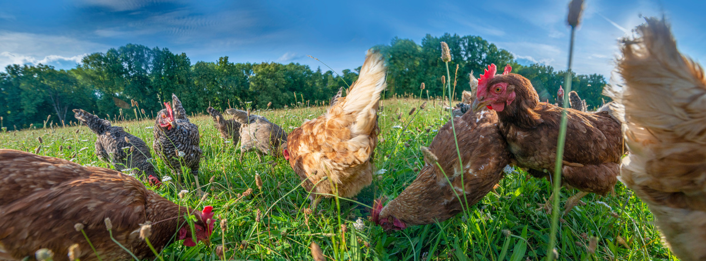

Nuestra misión es proporcionar aves de corral de la más alta calidad a nuestros clientes, asegurando su bienestar y salud en cada etapa de su vida. Nos esforzamos por ofrecer una amplia variedad de aves de corral, desde pollos y patos hasta pavos y gallinas, criadas de manera responsable y sostenible. Además, nos comprometemos a brindar información precisa y útil a nuestros clientes para garantizar el cuidado adecuado de las aves que adquieren. A través de nuestra dedicación a la calidad, la salud y la satisfacción del cliente, aspiramos a ser el destino preferido para aquellos que buscan aves de corral de confianza para sus necesidades domésticas o comerciales.
Nos esforzamos por ser líderes en la industria de la venta de aves de corral, siendo reconocidos por la calidad excepcional de nuestras aves y por promover prácticas de cría sostenible y ética. Aspiramos a ser un referente en el cuidado y bienestar animal, proporcionando a nuestros clientes no solo aves saludables y felices, sino también información valiosa sobre cómo criar y mantener a estas aves de manera responsable. A medida que avanzamos, buscamos ser un centro de recursos confiables para aficionados y profesionales en la cría de aves de corral, contribuyendo así al fortalecimiento de comunidades que valoran la agricultura sustentable y la conexión con la naturaleza.
